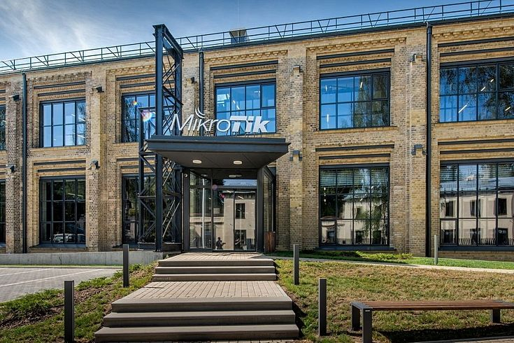

- Uzņēmums tika dibināts 1996. gada 14. martā.
- 1997. gada uzņēmuma darbinieki izstrādāja pirmo uz Linux operētājsistēmas bāzētu RouterOS programmatūras sistēmu, kas paredzēta uzņēmuma ražotajām tīkla iekārtām, kā arī standarta x86 tipa datoriem.
- 2002. gadā MikroTik sāka izgatavot arī tīkla aparatūru, tapa RouterBOARD zīmols.
- 2014. gada uzņēmuma īpašnieku uzsāka vēsturisko VEF ēku atjaunošanu.
- 2016. gada vasaras tika izplatīta informācija, ka uzņēmuma peļņa iepriekšējā gadā ir sasniegusi 61,37 miljonus eiro, padarot to par otro pelnošāko uzņēmumu Latvijā aiz "Latvenergo", "Mikrotīkla" apgrozījums ir 200 miljonu eiro, kas bija aptuveni divas reizes vairāk nekā pirms gada.
Contact us
Vislabāk sazināties pa e-pastu.
| Kompānijas nosaukums | SIA Mikrotiks |
| Sales e-mail | sales@mikrotik.com |
| Tehniskā atbalsta e-pasts | support@mikrotik.com |
| Tālrunis (starptautisks) | +371-6-7317700 |
| Fax | +371-6-7317701 |
| Biroja adrese | Brivibas gatve 214i, Riga, LV-1039 LATVIA |
| Reģistrētā adrese | Aizkraukles iela 23, Riga, LV-1006 LATVIA |
| PVN reģistrācijas numurs | LV40003286799 |
| Biroja darba laiks | No pirmdienas līdz piektdienai no 9:00 līdz 17:00 |
Problēmu gadījumā mēs jums noteikti palīdzēsim.
